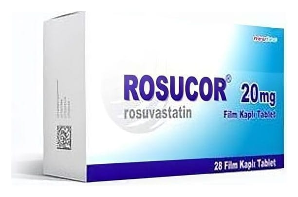

Rosucor 20 mg Film Kaplı Tablet, 28 Adet

Ne için kullanılır
KT · Bölüm 1ROSUCOR 20 mg film kaplı tablet, “statinler” adı verilen gruba dahil bir ilaçtır.
ROSUCOR tabletler, pembe renkli, dairesel, bikonveks film kaplı tabletlerdir; 28 ve 84 tablet içeren blister ambalajlarda piyasaya verilir.
Doktorunuz tarafından reçetenize ROSUCOR yazılmıştır; çünkü: • Yüksek kolesterol düzeylerine sahipsiniz. Yani, kalp krizi veya inme riski taşıyorsunuz. ROSUCOR 20 mg, heterozigot ailesel yüksek kolesterol öyküsü olan erişkinlerde, ergenlerde ve 10 yaşında ya da daha büyük olan çocuklarda ve homozigot ailesel yüksek kolesterol öyküsü olan erişkinlerde, ergenlerde ve 6 yaşında ya da daha büyük olan çocuklarda yüksek kolesterolü tedavi etmek için kullanılır.
• Kolesterol düzeylerinizi düzeltmek için beslenme şeklini değiştirmeniz ve daha fazla egzersiz yapmanız yeterli olmadığından dolayı bir statin (kolesterol düşürücü ilaç) almanız önerilmiştir. ROSUCOR aldığınız sürece, kolesterol düşürücü beslenme diyetinize ve egzersizlerinize devam etmelisiniz. veya • Kalp krizi geçirme, inme veya ilişkili sağlık problemleri riskinizi arttıran diğer faktörlere sahipsiniz.
Kalp krizi, inme veya diğer sorunlar ateroskleroz olarak adlandırılan bir hastalıktan kaynaklanabilir. Aterosklerozun nedeni damarlarınızda yağlı artıkların birikmesidir.
ROSUCOR kullanmaya devam etmeniz neden önemlidir? ROSUCOR, kanda bulunan, lipid adı verilen, en yaygını kolesterol olan yağ maddelerinin düzeylerini düzeltmek için kullanılır.
Kanda bulunan kolesterolün değişik tipleri vardır. “Kötü” kolesterol (LDL-K) ve “iyi” kolesterol (HDL-K).
• ROSUCOR “kötü” kolesterolü düşürür, “iyi” kolesterolü yükseltir. • Vücudunuzun “kötü” kolesterol üretmesini önlemek için vücudunuza yardımcı olarak etki eder. Aynı zamanda vücudunuzun “kötü” kolesterolü kanınızdan uzaklaştırma kabiliyetini artırır.
İnsanların çoğu, yüksek kolesterolden etkilenmediklerini düşünürler, çünkü bu durum nedeniyle bir belirti hissetmezler. Ama bu durum tedavi edilmezse, yağlı artıklar kan damarlarınızın çeperlerinde birikir ve damarlarınızı daraltır.
Bazen, daralan bu damarlar tıkanabilir. Kalbe veya beyine kan gitmezse, kalp krizi veya inme ortaya çıkabilir. Kolesterol düzeylerinizi düşürerek, kalp krizi geçirme, inme veya ilişkili sağlık problemleri riskinizi azaltmış olursunuz.
Kolesterolünüz istenen düzeye gelse bile ROSUCOR almaya devam etmeniz gerekir. Çünkü ROSUCOR, kolesterol düzeyinizin yeniden yükselmesine ve bunların damarlarınızda birikmesine engel olur. Ancak, doktorunuz ilacınızı kesmenizi söylerse veya hamile kalırsanız ROSUCOR kullanmamalısınız.